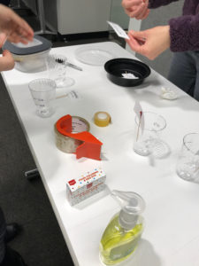

By: Lily Xie, Sarah Caso, and Tanaya Srini
Our group worked with many of the tables provided in the Food Water Footprint report and eventually settled on using the “virtual water” data to demystify where our water comes from, and how much water we consume beyond typical household uses. The data say that only 5% of the water we consume on a daily basis in the US is related to household uses like drinking water, washing our clothes, and showering. Industrial uses account for 10%–double household use–of the water we consume, which was very surprising since we didn’t know what industrial uses actually included. We wanted to tell this story because we we wanted to correct misconceptions about water usage in the hopes of influencing how people think about their water consumption when trying to be more environmentally friendly.
Our audience are Boston Museum of Science visitors on World Water Day (March 22, 2019). We selected this audience for our demonstration because we wanted to deepen the knowledge of those with some preexisting engagement with science (i.e. visiting the Museum of Science on World Water Day). Our assumption is that these visitors would both be interested in learning about water and generally committed to environmental justice (given their celebration of World Water Day, a holiday created by the United Nations to further issues of water access). In crafting our sculpture/demonstration, we considered the all-ages audience we’d likely encounter at the Museum of Science and the way the audience would cycle through the museum, and concluded that we needed to utilize a more personal and interactive format to capture their attention initially and keep the demonstration concise to maintain our audience’s attention.

Caption: Setting up the demonstration
Our sculpture and accompanying demonstration use water and cups (labeled with daily use, agricultural, and industrial) to invite visitors to guess how their water consumption is distributed across the three categories before revealing the actual distribution in pre-poured cups. Next, we introduce the idea that water shortages are a possible outcome of global climate change, to demonstrate the consequences such a shortage may have on one’s personal consumption. We do this by reducing the amount of water available for distribution, and asking visitors to make choices about how they would distribute their consumption under these conditions. The demonstration ends with an explanation of what the visitor’s new water consumption may change their life (i.e., less paper or cutting fresh produce in half).
We stick to household objects for our sculpture so that visitors feel comfortable interacting with the materials, and so that we can run multiple demonstrations at one time. We chose to discuss water shortages to challenge/broaden the visitor’s understanding of how their consumption may be affected. A water shortage would not just mean having to take shorter showers, but could also affect the kinds of foods we are able to eat, and how the material world around us looks and feels (in terms of industrial uses). The intent of the sculpture/demonstration aligns well with the goals of World Water Day and would slot in to the Museum of Science’s programming easily.
—
PROCESS
Our group never strayed from the Food Water Footprint data but abandoned a few ideas along the way. We crunched virtual water data that showed how much water countries imported and exported (disaggregated to green, blue, and gray water categories). We compared this data to global projections for drought severity, the Palmer Drought Severity Index to understand whether countries that were more or less susceptible to drought were also reliant on internal or external virtual water sources . We planned to do this by building lego blocks for each country to a height representing the share of the country’s total water usage that was imported. The color of the lego model represented the projection for drought severity on a color ramp from red (severely drought prone) to white (moderately drought prone) to blue (not drought prone). We then planned to pump water into a fish tank with selected countries, and lower the water level to simulate countries that would be left “high and dry” in the event of a water shortage. Unfortunately the message we were trying to deliver–about countries that were over-reliant on external water sources being particularly prone to drought– was not aligned with the visual approach: the countries more reliant on virtual water would be “revealed” by the falling water line first, but people tend to look at the emergence from water as a positive thing, since being submerged in water is associated with drowning. We also found it difficult to make the data land for our audience. It was difficult to personalize international water flows, and that message was taking precedence over our intent to explain the concept of “virtual water.” For these reason, we decided to return to our message and audience and try to simplify our sculpture to deliver a meaningful message about where their water comes from and how it is distributed.
—
MOCK DEMO SCRIPT
Welcome to the Museum of Science and thank you for attending our 2019 World Water Day event. Today we’re going to talk about where our water comes from.
Where do you think the water you use comes from?
(Audience answers: the tap, aquifers, rain)
All the answers you gave are correct – these sources contribute to domestic water – all the things you do at home: drinking, cooking, bathing, washing clothes and dishes, brushing your teeth, etc.
But there are actually OTHER ways we use water that do not fall into this category. What do you think these ways are?
(Audience answers: food, gardening)
[ Present the cups ]
In our day-to-day, we also consume water in the form of agriculture – such as the water it took to grow the vegetables we eat, or the water needed to feed livestock. We also consume water by ways of industrial products – for instance, the water it takes to make paper and plastic and even the clothes you wear.
[ Give everyone a cup full of water ]
Let’s say that this is how much water you use in a day. Go ahead and pour how much water you think you consume in each of these categories.
[ Reveal actual cups ]
Actually, 85% of the water we use is in the form of agriculture. 10% is in the form of industrial products, and only 5% of the water we consume daily is in the form of drinking or bathing.
[ Hand out marker ]
Now let’s draw a line around our cups to mark the current level of water use and pour the water back in our cup.
For many of us in Massachusetts, we are able to get enough water to live our day-to-day lives. However, not having enough water is a problem in much of the world, and will become an even bigger problem in the future. Due to growing population demands and climate change, scientists project that global water supply will only meet 40% of demand by 2050.
Let’s think about how your life might change if you only had access to 40 % of the water you have today. Pour out half of your cup, and redistribute the water once more.
(Audience fills domestic cup 4%, industrial 5%, and agriculture only 31%)
It looks like you chose to fill up your agriculture cup roughly a third of the way. Let’s see what the repercussions of this water shortage would look like.
[ demonstration ]
[Reveals the apple]
For every apple you eat today, you’ll only have access to ⅓ of the amount in the water shortage scenario.
[Reveals the soap]
For every container of soap you buy today, you’ll only have access to about ½ of this amount to wash your hands and dishes in the event of a global water shortage.
[Reveals the water bottle]
Lastly, since you decided to keep your domestic water close to what it is today, you’ll still be able to access almost the same amount of drinking water, about enough to fill 80% of a water bottle for every water bottle you fill up today.